第6章 超前进位加法器（Carry-Lookahead Adders）
本章导读
第 5 章留下的问题是：进位递推 \(c_{i+1} = g_i + p_i c_i\) 是串行的，能不能”一眼看穿”所有进位？超前进位（carry-lookahead, CLA）的答案是：把递推展开。本章从直接展开的二级 CLA 讲起，引出 Ling 加法器的巧思，最后抵达现代加法器的主流视角——进位计算即并行前缀问题（parallel prefix problem），Kogge-Stone、Brent-Kung、Han-Carlson、Ladner-Fischer 等经典网络都是这个框架下的不同折中。
6.1 展开进位递推（Unrolling the Carry Recurrence）
先明确本章要回答的问题的下界。和的最高位依赖于全部 \(2k\) 个输入比特；若逻辑门扇入至多为 \(d\)，则任何加法器的延迟都不可能低于 \(\log_d(2k)\)。第 5 章的行波进位是 \(O(k)\)，离这个下界太远——能不能做到 \(O(\log k)\)？超前进位给出肯定回答。
先复习第 5 章的三个辅助信号：生成（generate）\(g_i = x_i y_i\)、传播（propagate）\(p_i = x_i \oplus y_i\)、传递（transfer）\(t_i = a_i = g_i + p_i\)（\(a_i\) 亦称 annihilate/absorb，表示”不消灭进位”）。进位递推因此有两种等价写法：
\[ c_{i+1} = g_i + p_i c_i = g_i + t_i c_i \]
这里有一个值得反复体会的要点：这个递推把进位网络（carry network）的设计与数制细节彻底解耦——它既不关心你用二进制还是高基数、也不关心你在做加法还是减法。把 \(g_i, p_i\) 重新解释为借位生成与借位传播，同一个进位网络可以原封不动地当作借位网络（borrow network）用：二进制减法 \(x - y\) 里，借位生成 \(\gamma_i = \bar{x}_i y_i\)、借位传播 \(\pi_i = x_i \oplus y_i\)（与加法的 \(p_i\) 完全相同！），借位递推 \(b_{i+1} = \gamma_i + \pi_i b_i\) 与进位递推同构。CLA 结构能被跨场景复用的根源就在这里。
把递推逐级代入，就能把每个进位写成 \((g, p)\) 与 \(c_0\) 的纯组合函数。以 \(c_i\) 为例，展开的前几步是：
\[ \begin{aligned} c_i &= g_{i-1} + p_{i-1}c_{i-1} \\ &= g_{i-1} + g_{i-2}p_{i-1} + c_{i-2}p_{i-2}p_{i-1} \\ &= g_{i-1} + g_{i-2}p_{i-1} + g_{i-3}p_{i-2}p_{i-1} + c_{i-3}p_{i-3}p_{i-2}p_{i-1} \end{aligned} \]
一直展开到最后一个乘积项含有 \(c_0 = c_{in}\) 为止。展开式的读法极其直观：进位进入第 \(i\) 位，当且仅当它在第 \(i-1\) 位生成；或者它在第 \(i-2\) 位生成、并被第 \(i-1\) 位传播；或者它在第 \(i-3\) 位生成、并被第 \(i-2\) 与第 \(i-1\) 位接力传播……每一项都是”某个低位生成 + 中间一路传播”的组合。
展开（unrolling）是硬件设计里”面积换时间”的最古老手法：把递推的时序维度压扁成组合逻辑的空间维度。本章后面的一切结构——多级 lookahead、Ling、前缀网络——都可以看成对”完全展开不可行”这一现实的补救：只展开有限的跨度，然后用层次结构把跨度接力起来。理解 CLA 的最好方式，就是把它当成”受控的、分层的展开”。
看一个具体例子。设 \(x = 1011_2\)、\(y = 0111_2\)、\(c_{in} = 0\)，则位级信号为 \(g = (g_3 g_2 g_1 g_0) = 0011\)、\(p = (p_3 p_2 p_1 p_0) = 1100\)。逐位套用展开式：
\[ c_1 = g_0 + p_0 c_0 = 1,\qquad c_2 = g_1 + p_1 g_0 + p_1 p_0 c_0 = 1,\qquad c_3 = g_2 + p_2 g_1 = 1,\qquad c_4 = g_3 + p_3 g_2 + p_3 p_2 g_1 = 1 \]
\(c_4 = 1\) 的来历是：第 1 位生成的进位被第 2、3 位一路传播了上去。最终和位 \(s_i = p_i \oplus c_i\) 给出 \(s = 0010\)、进位输出 \(c_4 = 1\)，合起来 \(10010_2 = 18\)，与 \(11 + 7\) 相符。
\(k = 4\) 时把四个进位全部写开，就是教科书上最经典的一组式子：
\[ \begin{aligned} c_1 &= g_0 + c_0 p_0\\ c_2 &= g_1 + g_0 p_1 + c_0 p_0 p_1\\ c_3 &= g_2 + g_1 p_2 + g_0 p_1 p_2 + c_0 p_0 p_1 p_2\\ c_4 &= g_3 + g_2 p_3 + g_1 p_2 p_3 + g_0 p_1 p_2 p_3 + c_0 p_0 p_1 p_2 p_3 \end{aligned} \]
每一项的”文字数”恰好比进位下标多 1——\(c_4\) 的最长项含 5 个文字。配上产生 \(g_i\) 的二输入与门、产生 \(p_i\) 与和位的二输入异或门，这组式子就是一个全超前（full lookahead）4 位加法器的全部进位逻辑。
理论上，任意 \(k\) 位的进位都能用两级与或逻辑直接算出，最大扇入为 \(k+1\)。这既是好消息也是坏消息：\(k = 31\) 时 \(c_{31}\) 的展开式有 32 个乘积项、最大项含 32 个文字，这种规模的与门/或门在 CMOS 里并不存在，只能拆成门树实现，延迟又被”还”了回来。顺带把 4 位全超前的门账记下来：四个进位共 \(1+2+3+4 = 10\) 个乘积项，合计 \(2+3+4+5 = 14\) 个文字，即 10 个与门（共 14 输入）加 4 个或门（共 10 输入）——这个基数是后面比较各种改进方案（如 Ling）时的参照系。
面对扇入爆炸，教科书给出两条出路：
- 高基数加法（high-radix addition）：把相邻 \(h\) 位合并成一个基数 \(2^h\) 的数字，进位链长度立刻除以 \(h\)；代价是生成 \(g, p\) 信号与求和数字的逻辑变复杂。给定工艺下可能存在一个最优基数。一个简化的分析模型能说明这种权衡的形态：设数字级 \(g, p\) 的产生与和数字的计算共花 \(\delta h\) 时间（与 \(h\) 成正比），进位网络用单位时间的 2 位 lookahead 生成器逐层搭建，则总延迟形如 \(\delta h + O(\log_2(k/h))\) 的级数乘以级延迟——\(h\) 增大时前一项线性涨、后一项对数降，交点即最优基数。这个模型与 6.2 节”组宽最优在 4 附近”的经验结论互为印证。
- 多级超前进位（multilevel lookahead）：保持二进制，改用”块 → 块的块 → ……“的层次化 lookahead。这是工业界的实际选择，即 6.2 节的主题。
4 位 CLA 模块是这条路上的甜蜜点：组内 4 位进位用两级与或逻辑直接展开，同时产出组生成 \(G\) 与组传播 \(P\)（即所谓的块信号 block signals）：
\[ G = g_3 + p_3 g_2 + p_3 p_2 g_1 + p_3 p_2 p_1 p_0, \qquad P = p_3 p_2 p_1 p_0 \]
组与组之间再用同样的递推——多级 CLA（multilevel CLA）由此而来，总延迟 \(O(\log k)\)。
需要注意 \(c_4\) 并不参与任何和位的计算，因此不必走完整的展开式，用更省的一级形式 \(c_4 = g_3 + p_3 c_3\) 事后补算即可，几乎不损失速度。原书图 6.1 给出的正是这样一个 4 位全超前进位（full lookahead）进位网络。把它的 \(c_4\) 部分替换为块信号产生电路，就得到下面这个可以级联的标准积木。
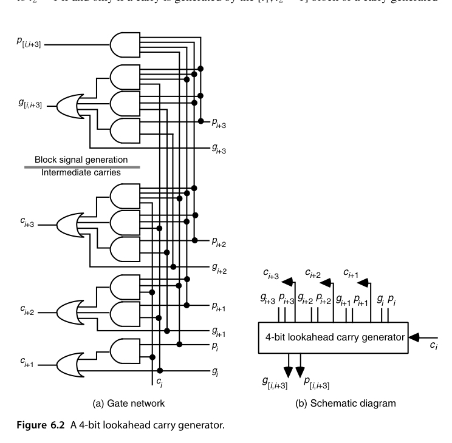
回到前面那个算例：该组的 \((G, P) = (1, 0)\)。下游电路只要看到这两个比特就知道”无论 \(c_{in}\) 是什么，进位都会被生成”，完全不必关心组内到底发生了什么。块信号把 4 位的内部结构压缩成两个比特，这正是多级 lookahead 能够层层套娃的根本原因。
再把块信号的三种典型形态记熟，后面读图会快得多：\((G, P) = (0, 0)\) 意味着该块吸收（无论进位输入是什么，块输出进位恒为 0，组内必有某位 \(x_i = y_i = 0\) 截断了传播链）；\((0, 1)\) 意味着传播（块输出进位就等于块输入进位，组内每位都恰好一进一出）；\((1, \cdot)\) 意味着生成（块输入进位无关紧要）。三级判断共用一套 \((g, p)\) 合并逻辑——这也是把第 5 章的”进位完成检测”电路换成 lookahead 结构时几乎不用改设计的原因。
RTL 实践：rtl/ch6_2_carry_lookahead_adder
两级结构：4 位 CLA 组生成局部 \(g, p\)，组级再用 lookahead 逻辑产生组间进位：
module cla4 (
input logic [3:0] a, b,
input logic cin,
output logic [3:0] s,
output logic pg, gg // 组传播、组生成
);
logic [3:0] g, p;
logic [4:0] c;
assign g = a & b;
assign p = a ^ b;
assign c[0] = cin;
assign c[1] = g[0] | (p[0] & c[0]);
assign c[2] = g[1] | (p[1] & g[0]) | (p[1] & p[0] & c[0]);
assign c[3] = g[2] | (p[2] & g[1]) | (p[2] & p[1] & g[0])
| (p[2] & p[1] & p[0] & c[0]);
assign c[4] = g[3] | (p[3] & g[2]) | (p[3] & p[2] & g[1])
| (p[3] & p[2] & p[1] & g[0])
| (p[3] & p[2] & p[1] & p[0] & c[0]);
assign s = p ^ c[3:0];
assign pg = &p; // p3 p2 p1 p0
assign gg = g[3] | (p[3]&g[2]) | (p[3]&p[2]&g[1])
| (p[3]&p[2]&p[1]&g[0]); // 不含 cin 的组生成
endmodule16 位版本用 4 个 cla4 + 一个组间 lookahead 单元；testbench 与黄金模型全面对比（含 \(c_{in}\) 两种取值）。
6.2 超前进位加法器设计（Carry-Lookahead Adder Design）
把二进制加法按 4 位一组”打包”来看，它等价于一次基数 16 的加法：每个 radix-16 数字位覆盖原二进制的第 \(i\) 到第 \(i+3\) 位（\(i\) 为 4 的倍数），其块生成与块传播信号为：
\[ g_{[i,i+3]} = g_{i+3} + g_{i+2}p_{i+3} + g_{i+1}p_{i+2}p_{i+3} + g_i p_{i+1}p_{i+2}p_{i+3}, \qquad p_{[i,i+3]} = p_i p_{i+1} p_{i+2} p_{i+3} \]
读法与 6.1 节的展开式完全一致：四个位共同传播进入的进位，当且仅当四个位各自都传播；它们共同生成进位，当最高位自己生成，或次高位生成并被最高位传播，以此类推。一句话概括：在位块这一层，“传播”是 AND，“生成”是带传播链的 OR。这两条式子就是整个多级 CLA 的公理。
更一般地，对 \(i_0 < i_1 < i_2\)，任意宽度的相邻块都可以合并：
\[ g_{[i_0,i_2-1]} = g_{[i_1,i_2-1]} + g_{[i_0,i_1-1]}\,p_{[i_1,i_2-1]}, \qquad p_{[i_0,i_2-1]} = p_{[i_0,i_1-1]}\,p_{[i_1,i_2-1]} \]
而且参与合并的两块不必毗连，允许互相重叠：对满足 \(i_0 \le i_1-1 \le j_0 < j_1\) 的区间 \([i_1, j_1]\) 与 \([i_0, j_0]\)，同样有
\[ g_{[i_0,j_1]} = g_{[i_1,j_1]} + g_{[i_0,j_0]}\,p_{[i_1,j_1]}, \qquad p_{[i_0,j_1]} = p_{[i_0,j_0]}\,p_{[i_1,j_1]} \]
这条性质看似只是数学脚注，实则是后面并行前缀结构的自由度来源：前缀网络里大量节点共享部分区间的结果，正是靠”重叠块也能合并”才合法。证明只需把两个重叠块各自按”不重叠的三段”拆开写两遍：设 \(A = [i_0, i_1-1]\)、\(B = [i_1, j_0]\)、\(C = [j_0+1, j_1]\)，则 \([i_0, j_0] = AB\)、\([i_1, j_1] = BC\)，代入合并式得 \(g_{[i_0,j_1]} = g_{BC} + g_{AB}p_{BC} = (g_C + g_B p_C) + (g_B + g_A p_B)(p_B p_C)\)，展开后 \(g_B\) 项合并、冗余项吸收，结果与直接对 \(ABC\) 三段合并完全一致——重叠部分 \(B\) 被”算了两次”却不出错，因为块生成/传播是幂等意义下的区间性质，而不是计数。
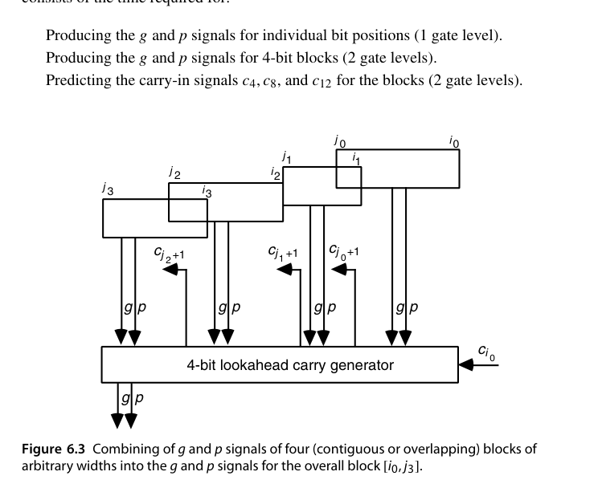
有了这块积木，搭宽加法器就是纯粹的级联：两级 16 位 CLA = 4 个 4 位加法器 + 1 个 4 位 lookahead 进位生成器（此时后者等价于”预测一次 radix-16 加法中的三个中间进位”）。
拿一组 16 位数据把两级流程完整走一遍：\(x = (0101\,1000\,1100\,1011)_2\)、\(y = (1010\,0001\,0011\,0111)_2\)、\(c_0 = 0\)。先逐块算位级信号与块信号：
| 块 | 位 | \(g\) | \(p\) | \((G, P)\) | 块类型 |
|---|---|---|---|---|---|
| 0（位 0–3） | 1011 / 0111 | 0011 | 1100 | \((1, 0)\) | 生成 |
| 1（位 4–7） | 1100 / 0011 | 0000 | 1111 | \((0, 1)\) | 传播 |
| 2（位 8–11） | 1000 / 0001 | 0000 | 1001 | \((0, 0)\) | 吸收 |
| 3（位 12–15） | 0101 / 1010 | 0000 | 1111 | \((0, 1)\) | 传播 |
lookahead 生成器对这四个 \((G, P)\) 套用同一组展开式：\(c_4 = G_0 = 1\)；\(c_8 = G_1 + P_1 G_0 = 1\)；\(c_{12} = G_2 + P_2 G_1 + P_2 P_1 G_0 = 0\)（吸收块一刀切断了进位链）；\(c_{16} = G_3 + P_3 G_2 + \cdots = 0\)。各块拿到自己的输入进位后再并行算内部进位与和位：块 0 得 \(0010\)、块 1 得 \(0000\)、块 2 得 \(1010\)、块 3 得 \(1111\)，拼出 \(s = (1111\,1010\,0000\,0010)_2 = 64002 = 22731 + 41271\)。注意全过程里四个块算和位是同时进行的——lookahead 生成器把”等进位”从串行依赖变成了并行广播。
它的关键路径可以逐段拆开：
| 关键路径段 | 门级 |
|---|---|
| 产生位级 \(g_i, p_i\) | 1 |
| 产生 4 位块的 \((g, p)\) | 2 |
| 预测块间进位 \(c_4, c_8, c_{12}\) | 2 |
| 生成块内部进位 \(c_{i+1}\) | 2 |
| 计算和位 \(s_i = p_i \oplus c_i\) | 2 |
| 合计 | 9 |
对比 16 位行波进位加法器的 32 个门级，收益接近 4 倍——而这只是两级 lookahead。
再往上叠一级：4 个上述 16 位加法器加一个 4 位 lookahead 生成器，就得到三级 64 位 CLA。一个反直觉的事实先记下来：32 位（\(\lceil \log_4 32 \rceil = 3\)）也是三级、同样 13 个门级——32 位加法器在这个体系里一点便宜都占不到，这个”字长尴尬”问题留到 7.5 节用混合结构解决。
16 位那级内部还有一层时序细节值得展开：lookahead 生成器送出 \(c_4, c_8, c_{12}\) 之后，各 4 位块还要用块内自己的展开式生成 \(c_{i+1}\) 并算和位——这就是延迟表里最后那 “2 + 2” 级的来历。注意块内这 4 级与相邻块的计算完全并行，且块 0 因为没有上级进位要等，实际比其他块早完成；关键路径穿过的是”最后一个拿到组进位的块”。画时序图时，把 lookahead 生成器的输出沿标注在第 5 级、各块和位标注在第 9 级，整条路径的分段延迟就一目了然了。
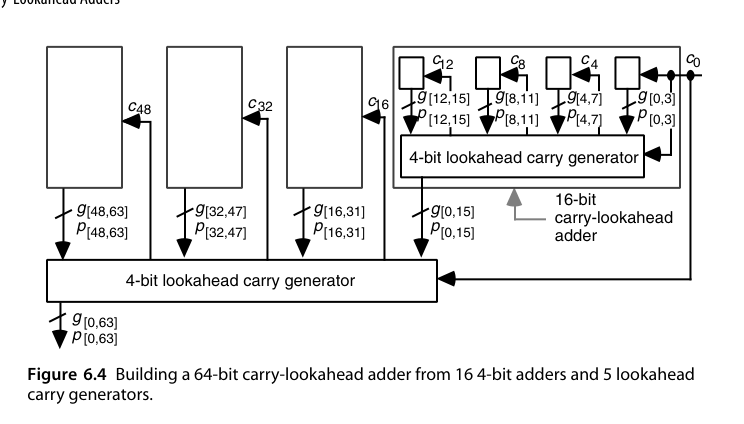
每增加一级 lookahead，延迟固定增加 4 个门级：向下汇总 \((g, p)\) 用 2 级，向上分发进位再用 2 级。因此基于 4 位 lookahead 块的 \(k\) 位 CLA 延迟为
\[ T_{\text{lookahead-add}} = 4\log_4 k + 1 \quad \text{个门级} \]
64 位即 \(4 \times 3 + 1 = 13\) 级。若字宽不是 4 的整数次幂，部分 lookahead 端口闲置，公式改为 \(4\lceil \log_4 k \rceil + 1\)。
把 13 级与行波的 128 级放在一起，再对照 6.1 节开头的下界 \(\log_2(2 \times 64) = 7\) 级（二输入门），可以看出三级 CLA 已经把理论下界追到了 2 倍以内——继续逼近的部分就要靠前缀网络（6.5 节）和工艺技巧（6.6 节）去抠了。元件账也顺手算一下：16 个 4 位加法器、5 个 lookahead 生成器，每个生成器内部是十几个与或门，整个进位网络的规模仍然只是 \(O(k)\) 量级——多级 lookahead 用线性硬件买到了对数延迟，这是它战胜”全展开”的根本原因。
组宽并非越大越好。改用 6 位或 8 位 lookahead 块能减少 lookahead 的级数，但每级内部与或门的扇入随之上升，而 CMOS 里高扇入门的延迟与面积都是超线性增长的。总延迟大致是”（每级门延迟，随组宽 \(r\) 上升）\(\times\)（级数 \(\log_r k\)，随 \(r\) 下降）“，二者相乘在某个 \(r\) 处取极小——实践中这个最优点落在 4 附近，这也是 4 位 CLA 组成为事实标准的原因。
4 位 lookahead 块的标准化有深刻的历史惯性：TTL 时代的 74181 ALU 直接输出组信号 \(\overline{G}, \overline{P}\)，配套的 74182 正是”4 位 lookahead 进位生成器”本尊——多级 CLA 在 1970 年代就是两颗标准芯片的对插。今天 SoC 里的加法器早已不用分立芯片，但”4 位组 + \((G, P)\) 接口”的模块划分原封不动地活在每一个综合出来的 CLA 里。
最后一个容易被忽略的工程细节：图 6.4 的多级结构天然不产生最高进位 \(c_{64}\)，而溢出判断、多字长拼接等场景都必须要它。业内有两个补救办法：其一是按最高位的辅助信号直接构造
\[ c_{out} = g_{[0,k-1]} + c_0\,p_{[0,k-1]} = x_{k-1}y_{k-1} + s_{k-1}\left(x_{k-1} + y_{k-1}\right) \]
后一个等号的推导值得看一眼：\(c_{out} = 1\) 当最高位两个操作数都是 1（\(x_{k-1}y_{k-1}\)），或者和位为 1 且至少一个操作数为 1——后一种情形恰好覆盖”低位进位传上来”的全部可能（\(s_{k-1} = 1\) 而 \(x_{k-1}y_{k-1} = 0\) 时，两操作数必为一个 1 一个 0，\(c_{out}\) 就等于 \(c_{k-1}\)，而 \(x_{k-1} + y_{k-1} = 1\) 把它选中）。这个形式完全绕开了进位网络，用最高位的本地信号几个门就搞定。其二是干脆把加法器做宽 1 位（需要 60 位就做 61 位），直接把多出来的那个和位当作进位输出——粗暴但极其好用，许多综合出来的”进位输出”就是这么来的。
6.4 进位确定即前缀计算（Carry Determination as Prefix Computation）
把视角再抬高一层。定义进位算子（carry operator） \(\odot\)（也称前缀算子）：
\[ (g, p) \odot (g', p') = (g + p\,g',\; p\,p') \]
这里的直觉顺序是”右操作数在低位、左操作数在高位”：合并后的一大块要生成进位，当高位块自己生成，或者低位块生成且被高位块传播；要传播，则两块都必须传播。注意它和 6.2 节的块合并式是同一件事，只是剥掉了下标——下标本就无关紧要，任意两个相邻（或重叠）的位组都能这么合。
电路实现上，\(\odot\) 的与或形式 \(g = g'' + g'p''\)、\(p = p'p''\) 并不是唯一选择。代数变形 \(g = (g' + g'')(p'' + g')\) 可以让 \(g\) 与 \(p\) 都走两级 NOR（或 NOT-NOR）逻辑——在 NOR 门比 AND/OR 更快的工艺（如某些 domino 逻辑风格）里，这个变形让整个前缀网络的每一级都省出可观的延迟。读前缀加法器论文时看到形状陌生的算子电路，多半就是这类等价变形。
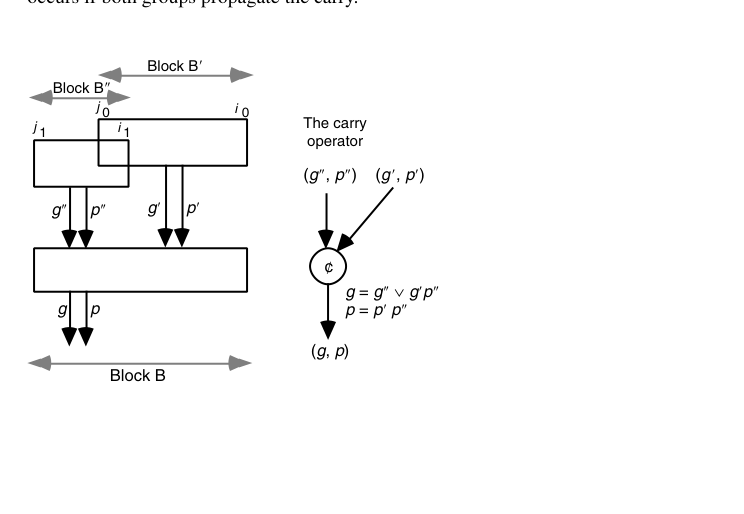
进位递推 \(c_{i+1} = g_i + p_i c_i\) 恰好可以写成前缀积：记 \((G_{i:j}, P_{i:j}) = (g_i, p_i) \odot (g_{i-1}, p_{i-1}) \odot \cdots \odot (g_j, p_j)\)，则
\[ c_{i+1} = G_{i:0} + P_{i:0}\,c_0 \]
\(\odot\) 满足结合律（但不满足交换律）——即 \(\big((g',p')\odot(g'',p'')\big)\odot(g''',p''')\) 与 \((g',p')\odot\big((g'',p'')\odot(g''',p''')\big)\) 恒等，但一般 \(g'' + p''g' \ne g' + p'g''\)。这意味着\((g, p)\) 序列可以任意加括号，计算所有前缀 \((G_{i:0}, P_{i:0})\) 就成为一个并行前缀（parallel prefix / scan）问题，任何前缀网络都能求解它。形式化地写：
\[ \text{给定}\ (g_0,p_0), (g_1,p_1), \ldots, (g_{k-1},p_{k-1}) \quad\Longrightarrow\quad \text{求}\ (G_{0:0},P_{0:0}), (G_{1:0},P_{1:0}), \ldots, (G_{k-1:0},P_{k-1:0}) \]
带 \(c_{in}\) 的加法也不用特殊处理：把 \(c_{in}=1\) 看成”第 \(-1\) 级生成的进位”，令 \(p_{-1} = 0\)、\(g_{-1} = c_{in}\)，然后照常计算所有前缀即可——只是级数从 \(k\) 级变成 \(k+1\) 级。
顺便指出一个文献中的等价表述：整个前缀框架也可以建立在 \((g, a)\)（生成/吸收）而非 \((g, p)\) 信号对上——进位递推 \(c_{i+1} = g_i + \bar{a}_i c_i\) 同样给出结合律算子。两种表述在数学上完全平行，差别只在电路实现的细节（\(p\) 用 XOR 产生、\(a\) 用 NOR 产生，不同工艺下成本各异），以及行波型前缀电路在 \((g, a)\) 表述下会自然退化成第 5 章的曼彻斯特式结构。后文统一用 \((g, p)\)。
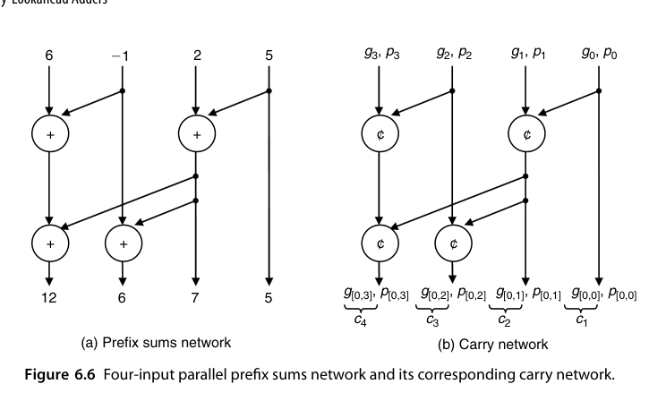
图上这张四输入网络值得照着算一遍。原书给 (a) 图喂的输入（从右往左）是 \(x_0 = 5\)、\(x_1 = 2\)、\(x_2 = -1\)、\(x_3 = 6\)：第一级两个加法器并行算出 \(x_0 + x_1 = 7\) 与 \(x_2 + x_3 = 5\)；第二级把 \(7\) 与 \(-1\)、\(5\) 分别组合，四个输出依次为 \(s_0 = 5\)、\(s_1 = 7\)、\(s_2 = 7 + (-1) = 6\)、\(s_3 = 7 + 5 = 12\)。把每个加法单元替换成 \(\odot\) 算子，就得到对应的进位网络（图中 (a) 与 (b) 的拓扑完全相同，(b) 的输出即 \(c_1\) 到 \(c_4\) 所需的 \((g_{[0,i]}, p_{[0,i]})\)）。不过有一处必须小心：整数加法是可交换的，随意组合部分和也能得到正确结果，但那样画出来的网络不能直接搬去做进位网络——只要被合并的块始终保持连续、且顺序不被打乱，才是安全的。
反过来，\((g, p)\) 给我们比加法更多的自由：由于重叠块的合并同样合法，前缀网络可以复用部分区间的结果（加法里这么做会导致重复计数）。这一份额外自由度，正是第 6.5 节各种花式前缀图能存在的原因。
动手练习一下这个翻译过程（8 输入）：画一个三级前缀网络——第一级两两合并 \((x_0,x_1), (x_2,x_3), (x_4,x_5), (x_6,x_7)\)；第二级合并相邻对得 \(s_1, s_3, s_5, s_7\)；第三级补齐偶数下标 \(s_2 = s_1 \odot x_2\) 之类——再把每个加法器换成 \(\odot\) 算子，就得到一个 8 位进位网络（这正是 Brent-Kung 的 8 输入实例）。若要支持 \(c_{in}\)，按前面的办法在最右端补一个 \((g_{-1}, p_{-1}) = (c_{in}, 0)\) 节点即可。这个”先画整数网络、再整体换算子”的工作流，是设计自定义前缀加法器的标准起手式。
最后提醒一个容易看错图的约定：进位网络图按从右到左编号（因为它对应位置记数法里从低位到高位的下标顺序），所以图上”从左往右读”的方向其实是高到低。严格说我们算的是后缀和，但按惯例仍称”前缀和/并行前缀网络”。
前缀框架最大的实用价值是可综合性：\((g, p)\) 初始化 + \(\odot\) 算子 + 求和 XOR 都是固定单元，唯一的变量是”前缀图怎么连”。现代 EDA 的 arithmetic synthesis 正是这么做的——把 + 映射成一个参数化前缀图，按时序约束在 Kogge-Stone / Han-Carlson / Brent-Kung 族里挑拓扑。手写前缀结构的意义因此不在”工具不会”，而在约束极端（超高频、超低功耗、异形字宽）时给出工具搜索空间之外的拓扑。
把前缀框架推到极端还有一个 sanity check 的价值：最朴素的前缀网络是串行的——每个前缀依次由前一个前缀与当前输入合并得到。把它翻译成进位网络，每一级就是 \(c_{i+1} = g_i + p_i c_i\)，整个电路恰好退化成第 5 章的行波进位加法器。也就是说，“前缀计算”这个抽象把行波、CLA、Kogge-Stone 全部收进同一个家族：它们只是同一个问题在（延迟, 面积, 扇出）空间里不同落点的实例。这也是本书反复强调的方法论——先把问题抽象对，再谈结构创新。
6.5 其他并行前缀网络（Alternative Parallel Prefix Networks）
前缀网络的谱系由两种截然不同的”分治”策略拉开。Ladner-Fischer 走的是”先各自算、再一次性对齐”的路：低 \(k/2\) 位交给右子网络算出它们自己的全部前缀和；高 \(k/2\) 位交给左子网络算出局部前缀和；最后把右网络最左端的那个输出（即 \(s_{k/2-1}\)）一次性加到左边的所有输出上。它的延迟与代价递推是
\[ D(k) = D(k/2) + 1 = \log_2 k,\qquad C(k) = 2C(k/2) + k/2 = (k/2)\log_2 k \]
延迟已经达到”只允许二输入算子”时的理论下界，但代价却接近 Kogge-Stone。把代价递推展开验证一遍：\(C(2) = 1\)，\(C(4) = 2 \times 1 + 2 = 4\)，\(C(8) = 2 \times 4 + 4 = 12\)，\(C(16) = 2 \times 12 + 8 = 32 = (16/2)\log_2 16\)——与闭式吻合。更要命的是扇出：\(s_{k/2-1}\) 这一根信号线要驱动左边 \(k/2\) 个加法单元，直接实现必须插缓冲链，反而把理论优势吃掉一截。对 16 输入的实例，这个节点的扇出是 8——在标准单元库设计里，8 倍扇出的网络通常要拆成 2-3 级缓冲树，相当于凭空多出约一级有效延迟，Ladner-Fischer 的”理论最快”因此常常兑现不了。
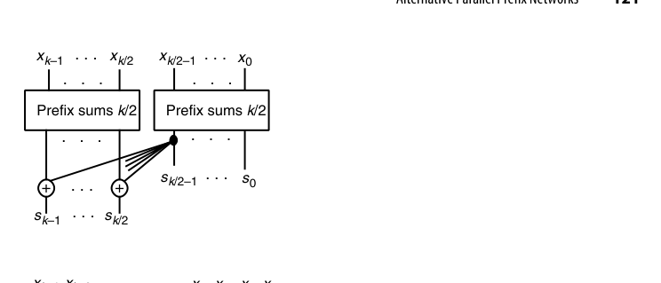
Brent-Kung 的分治则更加精打细算：先把输入两两相加，得到长度为 \(k/2\) 的新序列
\[ x_0+x_1,\; x_2+x_3,\; x_4+x_5,\; \ldots,\; x_{k-2}+x_{k-1} \]
对这个新序列求前缀和，得到的恰好就是原序列的奇数下标前缀和 \(s_1, s_3, s_5, \ldots\)（因为 \(s_3 = (x_0+x_1) + (x_2+x_3)\)）；偶数下标再用最后一级加法补齐：\(s_{2j} = s_{2j-1} + x_{2j}\)。于是
\[ D(k) = D(k/2) + 2 = 2\log_2 k - 2,\qquad C(k) = C(k/2) + k - 1 = 2k - 2 - \log_2 k \]
延迟几乎翻倍，节点数却只有 \(2k\) 量级——Brent 与 Kung 当年正是为了压制 VLSI 版图面积才提出它的。把 16 输入的三组数字摆在一起更能看清格局：Ladner-Fischer 4 级 32 单元（但有一个扇出 8 的节点）、Brent-Kung 6 级 26 单元、Kogge-Stone 4 级 49 单元。Kogge-Stone 的节点多的另一面是连线长：第 \(j\) 级的合并距离是 \(2^{j-1}\)，最后一级要跨越整个字长的一半——在”线延迟与门延迟同量级”的工艺节点上，这几根长线往往才是真正的关键路径，这也是混合结构与稀疏结构存在的现实理由。
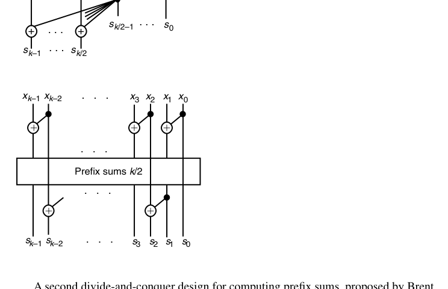
主流前缀网络的折中谱系（\(k\) 位）：
| 网络 | 级数 | 节点数 | 扇出 | 特点 |
|---|---|---|---|---|
| Kogge-Stone (Kogge 和 Stone 1973年) | \(\log_2 k\) | \(k\log_2 k\) | 2 | 最快、节点多、布线长 |
| Brent-Kung (Brent 和 Kung 1982年) | \(2\log_2 k - 1\) | \(2k\) | 小 | 最省、级数多一倍 |
| Han-Carlson | \(\log_2 k + 1\) | 介于两者 | 中 | 两者的杂交 |
| Ladner-Fischer | \(\log_2 k\) | 较少 | 高 | 高扇出需缓冲 |
表里没展开说的 Han-Carlson 网络值得补一笔：它先用一级 Brent-Kung 式的两两合并把问题降到 \(k/2\)，中段用 Kogge-Stone 只对奇数下标（或偶数下标）做完整前缀，末段再用一级 Brent-Kung 把缺失的下标补齐。奇偶分流使中段网络的节点数只有同宽 Kogge-Stone 的一半，延迟却只比最优多一级——在 64 位以上的处理器数据通路里，Han-Carlson 是比纯 Kogge-Stone 更常见的落地方案。前缀图的整个设计空间已被系统研究过（Harris 的分类工作给出了统一视角）：以（级数, 节点数, 最大扇出）为坐标，经典网络全都落在一条”不可能三角”的边界上，新设计无非是在边界上挑选新的落点。
Kogge-Stone 的规则网格结构在版图上极其友好（等长线、可平铺），是高性能处理器最常见的选择：\(k\) 输入时延迟 \(\log_2 k\) 级、代价 \(k\log_2 k - k + 1\) 个单元，是二输入限制下最快的方案；Brent-Kung 在面积/功耗敏感时占优，代价仅 \(2k-2-\log_2 k\)。Kogge-Stone 的构造也可以写成递推：把 \(k\) 个输入的问题拆成两个 \(k/2\) 子问题，再把右半的全部结果分别与左半对应输出合并一次，\(D(k) = D(k/2) + 1\)、\(C(k) = 2C(k/2) + k\)——与 Ladner-Fischer 同款的延迟递推，但它把”一根信号扇出 \(k/2\) 次”换成了”\(k/2\) 对信号各自扇出 2 次”，用节点数换掉了扇出隐患。另有一个看图时的陷阱：图 6.9 的 Brent-Kung 画出 7 层节点，但中间两层彼此独立、可并行执行，实际延迟只有 6 级，这就是 \(2\log_2 k - 2\) 里那个 \(-2\) 的来历。
既然两个极点各有痛点，自然会想到把它们杂交。以 16 位为例把四种结构的账并排（级数含单元自身延迟，节点数按递推精确计算）：
| 16 输入网络 | 级数 | 单元数 | 最大扇出 | 一句话点评 |
|---|---|---|---|---|
| Ladner-Fischer | 4 | 32 | 8 | 理论最快，扇出埋雷 |
| Brent-Kung | 6 | 26 | 2 | 最省，慢两级 |
| Kogge-Stone | 4 | 49 | 2 | 最快最规整，节点近翻倍 |
| BK/KS 混合（图 6.11） | 5 | 32 | 2 | 多一级，省三分之一 |
把图 6.9 中间那个”八输入前缀计算”部分换成八输入 Kogge-Stone 网络后，得到的混合图是 5 级 32 个单元——只比最快方案多一级，却省掉三分之一的单元。
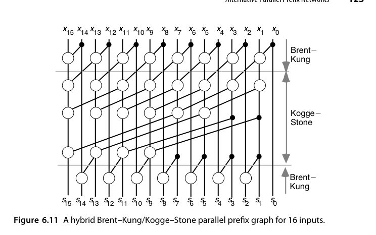
一般化地，两端各保留一级 Brent-Kung、中间用 \(k/2\) 输入的 Kogge-Stone，得到
\[ D(k) = \log_2 k + 1,\qquad C(k) = (k/2)\log_2 k \]
即”延迟仅比最优多一级，代价砍半”。实践中这个混合模板非常受欢迎：它可以按工艺的线/门延迟比连续调节两段的比例，而不必在两个极端之间二选一。更一般地，两端各保留 \(\ell\) 级 Brent-Kung、中间用 \(k/2^\ell\) 输入的 Kogge-Stone，延迟成为 \(\log_2 k + \ell\)、代价约 \((k/2)\log_2(k/2^{\ell-1})\) 量级——\(\ell\) 就是延迟-面积折中旋钮。Sugla 与 Carlson 当年正是沿着这条线系统研究了面积极端受限时的折中空间；对给定的字宽和工艺，最优 \(\ell\) 可以用”代价×延迟”指标扫出来。
RTL 实践：rtl/ch6_4_kogge_stone_adder
参数化 Kogge-Stone 前缀加法器——generate 循环按”距离 \(2^j\)“逐级合并 \((G, P)\)：
module kogge_stone_adder #(parameter int N = 16) (
input logic [N-1:0] a, b,
input logic cin,
output logic [N-1:0] s,
output logic cout
);
localparam int L = $clog2(N);
logic [N-1:0] G [0:L];
logic [N-1:0] P [0:L];
// 第 0 级：位级 g/p（g0 注入 cin）
assign G[0][0] = a[0] & b[0] | ((a[0] ^ b[0]) & cin);
assign P[0][0] = 1'b0; // 该位不再传播（cin 已吸收）
genvar i;
generate
for (i = 1; i < N; i++) begin : g_init
assign G[0][i] = a[i] & b[i];
assign P[0][i] = a[i] ^ b[i];
end
// 前缀级
for (int j = 1; j <= L; j++) begin : g_stage
for (i = 0; i < N; i++) begin : g_node
if (i >= (1 << (j-1))) begin
assign G[j][i] = G[j-1][i] |
(P[j-1][i] & G[j-1][i - (1 << (j-1))]);
assign P[j][i] = P[j-1][i] & P[j-1][i - (1 << (j-1))];
end else begin
assign G[j][i] = G[j-1][i];
assign P[j][i] = P[j-1][i];
end
end
end
endgenerate
assign s = (a ^ b) ^ {G[L][N-2:0], cin};
assign cout = G[L][N-1];
endmodule（同目录还附 Brent-Kung 版本 brent_kung_adder.sv 供对照。）
6.6 VLSI 实现考量（VLSI Implementation Aspects）
门级模型里的”最优”，落地到真实芯片上往往不是最优。图 6.9 那样的 Brent-Kung 图确实很适合 VLSI（节点少、连线短），但对高性能宽字长设计仍偏慢。真正流片时，工程师会结合工艺特性重新设计网络形态。
一个经典案例是 AMD Am29050 微处理器里的加法器（原书以 64 位版本说明）：它做的是基数 256 的加法，因而只需要算出 \(c_8, c_{16}, c_{24}, \ldots, c_{56}\) 这 7 个稀疏进位——不用的进位一个都不算，这是省硬件的第一步。
其核心构件是 曼彻斯特进位链（Manchester carry chain, MCC）：用预充电的传输管（图 6.12 中标为 PH2 的时钟相位）实现”传播链”，进位沿链传播而不是逐级进门，因此同样的门延时能覆盖更多位。MCC 的工作节奏分两相：预充电相把链上的关键节点充到高电平；求值相里，若某位 \(g_i = 1\) 则对应节点经条件放电管直接拉低（生成），若 \(p_i = 1\) 则该位传输管导通、把放电路径向高位传递（传播），若两者皆 0 则路径被切断（吸收）。整条链的延迟近似与位数的平方成正比（\(RC\) 阶梯效应），这正是 7.1 节”曼彻斯特链里块内行波延迟随块宽平方增长”这一假设的物理出处。图 6.12 给出两种 CMOS 实现：
- (a) 型：只输出整块的 \((g_{[0,3]}, p_{[0,3]})\)，四个位的 \(g_i\) 经条件放电、\(p_i\) 经传输管串联，结构最紧凑；
- (b) 型：除了整体信号 \([0,3]\)，还额外输出中间前缀 \([0,1]\) 与 \([0,2]\) 的 \((g, p)\) 信号——代价是多几根抽头，收益是一个 MCC 顺带算出多个前缀，把本该独立节点完成的结果捎带出来。
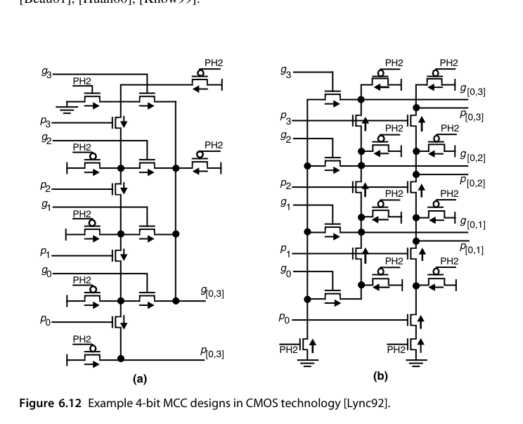
把 (a) 型与 (b) 型按三层组织起来，就得到一棵”生成树（spanning tree）“式的进位网络：第一层 16 个 4 位 (a) 型 MCC 产生 \([0,3], [4,7], \ldots, [60,63]\)；第二层用 1 个 5 位和 3 个 4 位 (b) 型 MCC 把它们合并，顺带产出 \([16,23]\)、\([16,27]\) 之类的中间前缀；第三层再两个 MCC 收口，最终得到 \([0,63]\) 与所需的各个稀疏进位。对照原书图 6.13 看，第二层 (b) 型 MCC 的”中间抽头”是整套设计的点睛之笔：\(c_{24}\) 需要 \([{-1},23]\)、\(c_{32}\) 需要 \([{-1},31]\)，二者共享 \([16,23]\) 这个中间结果，正是 6.4 节”重叠块合法合并”在晶体管层面的兑现。整个过程只有三层，且每一层的连线都局限在相邻范围——位片化（bit-sliced）版图可以等高平铺，时钟树与数据通路布线都可控。
这个案例说明了一条普适经验：最优网络是在给定工艺下的最优，不是门级模型下的最优。许多并行前缀加法器在”只计节点延迟”时同为最优，一旦把互连（扇入、扇出、线延时）计入，排序就会明显改变。深亚微米工艺下的系统性研究（如 Huang 与 Ercegovac 对前缀加法器线延迟影响的分析、Knowles 的加法器族谱工作）给出的结论相当一致：门级模型里的”平手”在计入布线后往往拉开明显差距，而版图规整、连线等长的结构会把理论优势兑现得更多。
渐近分析之外，真实芯片里决定成败的是：
- 布线电容：前缀网络的长线（Kogge-Stone 的跨距连线）在深亚微米下比门延迟更致命——线延迟随长度平方增长（分布 \(RC\)），一根横跨 32 位的连线可能需要中途插中继器，等效于在网络上又加了一级；
- 扇出缓冲：高扇出节点（Ladner-Fischer）需要缓冲链，吃掉理论优势；
- 门级实现：\(g + p\,g'\) 用 AOI/OAI 复合门一级完成，比分立门快得多——CMOS 里”与或非”本来就是单级结构，把算子映射到 AOI21/AOI22 这类单元后，前缀网络每级的实际延迟常常只有名义”两级与或”的六成左右；
- 位片化（bit-slice）版图：让每位的版图等高可平铺，时钟树与数据通路布线才可控。
还有一个跳出同步框架的思路值得知道：异步设计里，行波进位的平均延迟是 \(O(1)\)（随机数据下进位链平均只传播很短的距离），而超前进位保证最坏 \(O(\log k)\)。把两者并行实现、谁先出结果用谁，理论上可以造出平均 \(O(\log\log k)\) 的异步加法器——这是”最坏情况设计”与”平均情况设计”杂交的一个优雅样本，虽然工业界很少为此付出异步设计的验证成本。
把本章主要方案的”字长-延迟-硬件”账本汇总成一张表，作为选型起点（门级模型、4 位 lookahead 块）：
| 方案 | 16 位 | 32 位 | 64 位 | 硬件量级 | 备注 |
|---|---|---|---|---|---|
| 行波进位 | 32 级 | 64 级 | 128 级 | \(O(k)\) | 基准 |
| 多级 CLA | 9 级 | 13 级 | 13 级 | \(O(k)\) | 32 位不占便宜 |
| Ling CLA | ≈8 级 | ≈12 级 | ≈12 级 | \(O(k)\)，省约 1/4 门输入 | 末级多 1 级 |
| Kogge-Stone | 4+3 级 | 5+3 级 | 6+3 级 | \(O(k\log k)\) | 前缀级 + 输入/求和 3 级 |
| Brent-Kung | 6+3 级 | 8+3 级 | 10+3 级 | \(O(k)\) | 面积敏感首选 |
本章小结
- CLA：展开进位递推为两级逻辑，4 位组 + 多级组间 lookahead → \(O(\log k)\)；64 位三级结构约 13 个门级。
- Ling：变换递推形式（传播伪进位 \(h\) 而非 \(c\)）把最大扇入从 5 降到 4、门输入数从 19 降到 14，代价是末级和位多一级。
- 进位计算 = 前缀问题，\(\odot\) 算子满足结合律但不满足交换律；Kogge-Stone（快）、Brent-Kung（省）是两个极点，混合图是工业常用折中。
- 块信号允许重叠区间合并，这为前缀网络提供了整数加法所没有的自由度。
- VLSI 现实：布线、扇出、复合门、位片版图，往往比渐近级数更决定成败。
原书插图
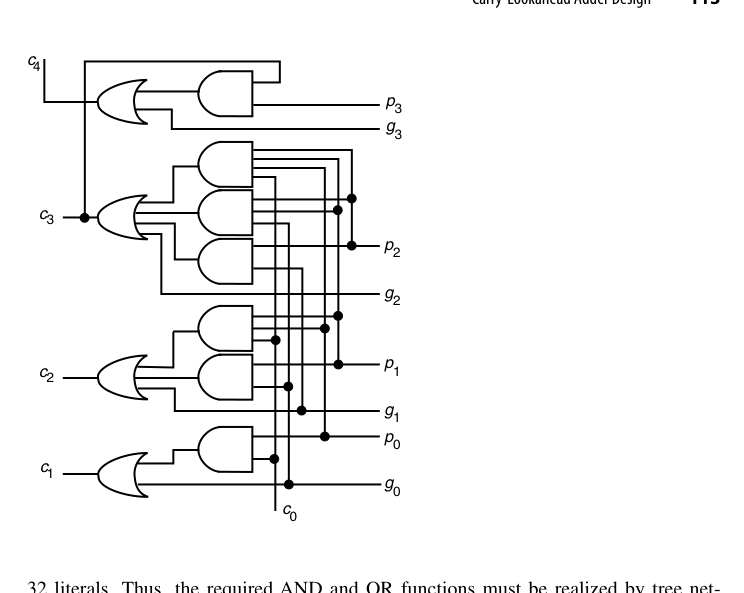
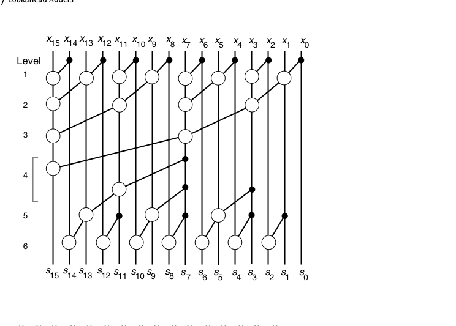
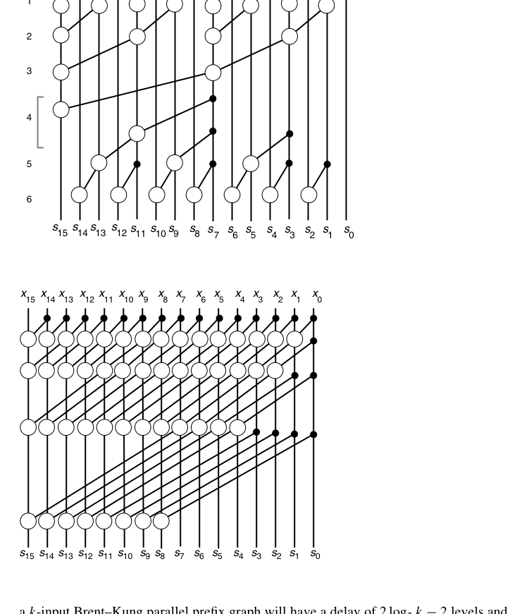